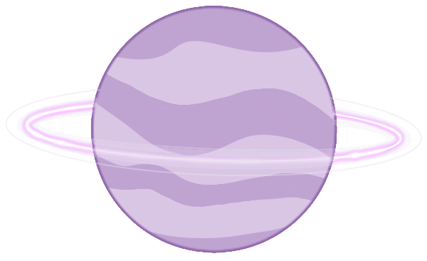
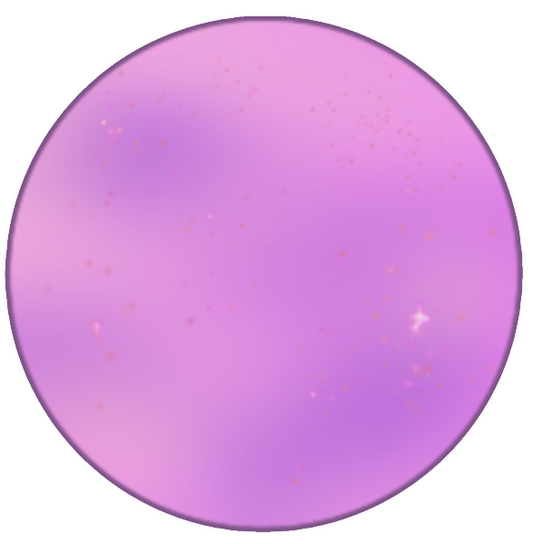
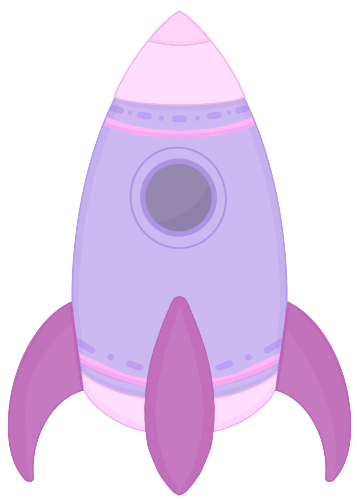
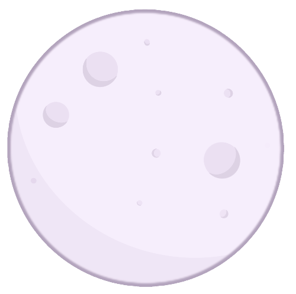
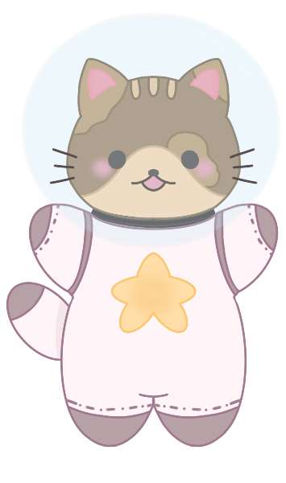
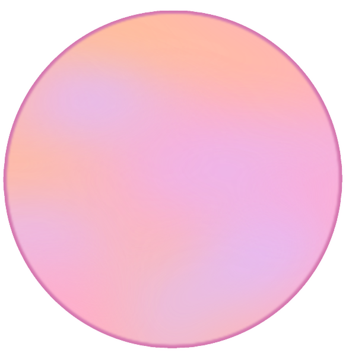
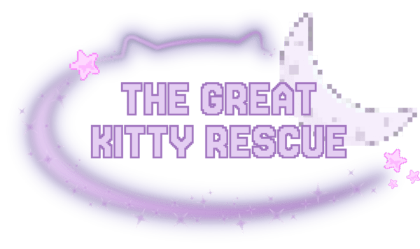

MadLibs







THE GREAT KITTY RESCUE
Captain Whiskers is a
sassy
fluffy
tiny
space kitty flying a
-powered ship through the stars.
One day, they got a message from the moon of
:
"ALERT: ALL KITTIES ARE TRAPPED"
Without hesitation, Captain Whiskers moved
loudly
rapidly
explosively
through asteroid fields and glowing galaxies. As Captain Whiskers zooms through space, he weave through the galaxies swirling neon gas clouds, passing through Saturn and Mars. As Captain Whiskers drives his ship, the ship begins to beep faster signaling how close he is to the lost kitties in
. As captain Whiskers got closer, he saw
creatures surrounding the scared kitties.
Meowing for help, Captain Whiskers
quietly
catiously
quickly
sneaks past the guards and uses his
to break open the cages one by one.
The rescued kitties quickly pile into the ship, and rescue every last kitty on
, all saying their hurrahs to Captain Whiskers. Captain Whiskers sets the destination to Catnip Land, a cozy planet filled with soft grass and endless treats where the kitties can finally feel safe again. To safely return to Catnip Land,they powered their ship using
. And just like that, all the kitties were saved, and Captain Whiskers saved the day!